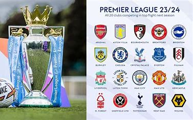
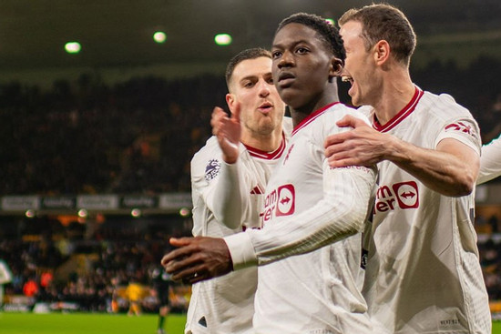
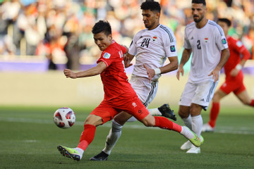
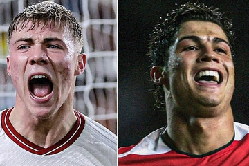
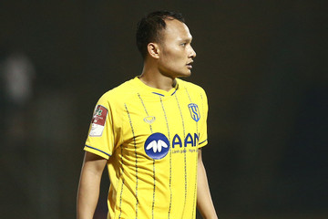

Tin tức thể thao
TIN NỔI BẬT

Kết quả giải bóng đá ngoại hạng anh
Ngoại hạng anh

Kobbie Mainoo: Thiên thần mới của MU
Giữa chuỗi phong độ thất thường và tranh cãi, Kobbie Mainoo đang nổi lên như thiên thần của MU với sự tự tin cùng bàn thắng quan trọng.

Tuyển Việt Nam: Chờ sự linh hoạt từ HLV Troussier
HLV Philippe Troussier cần có sự đánh giá rộng lượng hơn với những cựu binh ở tuyển Việt Nam vì mục tiêu đi tiếp ở vòng loại World Cup 2026.

Hojlund phá kỷ lục của Ronaldo tại MU
Rasmus Hojlund phá kỷ lục của Ronaldo tại MU thiết lập vào 2007, sau khi ghi bàn vào lưới Wolves ở trận thắng kịch tính 4-3 của đội nhà, vòng 22 Ngoại hạng Anh.

Trọng Hoàng bất ngờ chia tay SLNA
Dù còn hợp đồng với SLNA tới hết năm 2024 nhưng Nguyễn Trọng Hoàng quyết định nói lời chia tay với đội bóng xứ Nghệ.